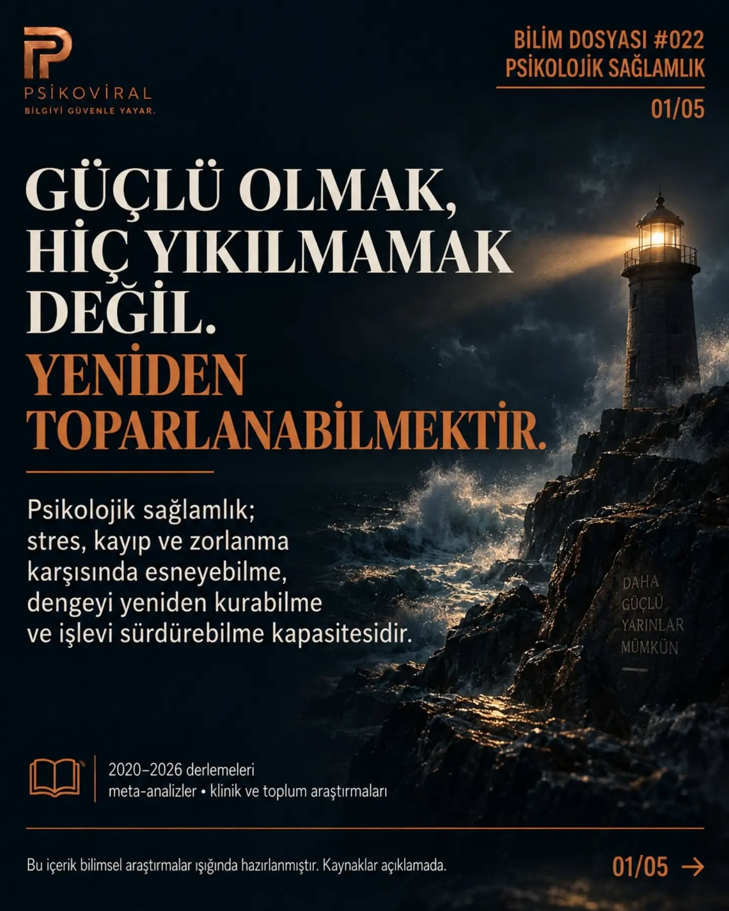

BİLİM DOSYASI #022 · PSİKOLOJİ
Güçlü olmak, hiç yıkılmamak değil.
Psikolojik sağlamlık üzerine bir dosya: Hiç zorlanmamak yerine, zorlanmanın ardından yeniden toparlanabilmek.
Kaydırmalı dosyayı açDOSYANIN ODAĞI
- Psikolojik sağlamlık
- Zorlanma deneyimi
- Yeniden toparlanma

Bir kapaktan daha fazlası.
Bu sayfa, Instagram’da yayımlanan Bilim Dosyası’nın kapak ve kısa tanıtımını bir araya getirir. Tüm slaytlar, açıklama ve paylaşımda yer alan kaynak notları için özgün yayına geçebilirsin.
Özgün paylaşımı inceleMERAK DEVAM ETSİN
Konuyu keşfet Aynı konudan başka sorular.

Birinin seni onaylamaması neden bütün gününü bozabiliyor?
Değerini başkalarının tepkisine bağladığında belirsizlik bile tehdit gibi hissedilebilir.
Web dosyasını okuSevilmek istemek zayıflık değildir
Yakınlık ihtiyacı doğaldır; kendini yalnızca sevilince değerli hissetmek ise başka bir meseledir.
Web dosyasını oku